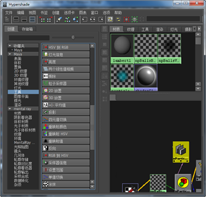
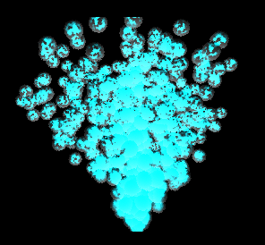

“粒子采样器信息”(Particle Sampler Info)节点属性提供了旧粒子颜色映射器、透明度映射器，白炽度映射器和年龄映射器的所有功能。请参见粒子采样器信息节点。
设定“粒子采样器信息”(Particle Sampler Info)节点属性
- 选择粒子形状并显示“属性编辑器”(Attribute Editor)。单击“particleSamplerInfo”选项卡。
粒子形状“属性编辑器”(Attribute Editor)中包含与该形状关联的每个“粒子采样器信息”(Particle Sampler Info)节点的选项卡。默认情况下，“属性编辑器”(Attribute Editor)中的两个区域：“公用只读属性”(Common Read-Only Attributes)和“更多只读标量属性”(More Read-Only Scalar Attributes)列出了节点已知的属性。还可以使用自行定义的属性。
- 可以设定属性。
重用“粒子采样器信息”(Particle Sampler Info)节点
多数情况下，只需在第一次映射特定着色节点的属性时生成新“粒子采样器信息”(Particle Sampler Info)节点。如果决定随后要映射另一个属性，则可以重用现有“粒子采样器信息”(Particle Sampler Info)节点。
通过重用“粒子采样器信息”(Particle Sampler Info)节点，可以减少混乱。但是，如果希望用不同的属性设置来实现不同目的，可以使用多个“粒子采样器信息”(Particle Sampler Info)节点。
重用“粒子采样器信息”(Particle Sampler Info)节点
- 选择“窗口 > 渲染编辑器 > Hypershade”(Windows > Rendering Editors > Hypershade)。
- 在“Maya”的“Hypershade”中，选择“工具”(Utilities)，然后选择“粒子采样器”(Particle Sampler)。 
- 若要在节点上建立连接，请在“Hypershade”“工作区”(Work Area)执行以下操作之一：
- 使用鼠标中键将节点拖动到着色节点上方。
- 在节点上单击鼠标中键，并从弹出菜单中选择列出的连接：“默认”(Default)或“其他”(Other)。
如果选择“默认”(Default)或“其他”(Other)，将显示“连接编辑器”(Connection Editor)以建立所需连接。
提示：如果无法确定“粒子采样器信息”(Particle Sampler Info)节点对应的着色器，请将着色器放在工作区中并使用“图形|向上”(Graph | Up)和“下游连接”(Downstream Connections)显示关联的工具节点。
添加用户定义的属性
若要使用这些属性中的任何一个，必须将具有相同名称和类型的属性添加到粒子形状。
无法添加任意名称的属性并将其用于“粒子采样器信息”节点。但可以使用表达式，将任何属性的值指定给粒子采样器信息节点识别的属性。
添加用户定义的属性
- 创建一个发射器。
- 显示“属性编辑器”(Attribute Editor)并选择“属性 > 添加属性”(Attributes > Add Attributes)。
- 单击“添加属性”(Add Attribute)窗口中的“粒子”(Particle)选项卡。
- 向下滚动列表并选择“userScalar#PP”或“userVector#PP”属性。单击“添加”(Add)。
示例 1
假设要使粒子在远离原点的位置产生更多噪波。为此，需要将着色器的噪波参数动画设定为粒子位置向量的幅值函数。
- 创建一个发射器。
- 选择粒子形状并将“粒子渲染类型”(Particle Render Type)设定为“云(s/w)”(Cloud(s/w))。
- 显示“属性编辑器”(Attribute Editor)并选择“属性 > 添加属性”(Attributes > Add Attributes)。
- 单击“添加属性”(Add Attribute)窗口中的“粒子”(Particle)选项卡。
- 将“userScalar1PP”属性添加到粒子形状。
- 使用此运行时表达式为其指定一个值（在动力学计算之前或之后）：
userScalar1PP = mag(position);
提示：尽管本示例使用了一个表达式来实现其效果。但也可以使用渐变来设定“userScalar1PP”动画。
- 选择粒子“属性编辑器”(Attribute Editor)中的 particleCloud1 选项卡。
- 单击“噪波”(Noise)属性旁边的
 （贴图）按钮。
（贴图）按钮。 此时将显示“创建渲染节点”(Create Render Node)窗口。
- 在“创建渲染节点”(Create Render Node)窗口中，在“Maya”下单击“工具”(Utilities)。
- 在右侧面板中，单击
 。
。 将显示“连接编辑器”(Connection Editor)。
- 在“连接编辑器”(Connection Editor)的左侧列选择“userScalar1PP”，并在右侧列选择“噪波”(Noise)。单击“关闭”(Close)。
这会将“粒子采样器信息”(Particle Sampler Info)节点的“用户标量1 PP”(User Scalar1 PP)输出连接到着色器的“噪波”(Noise)输入。
“粒子采样器信息”(Particle Sampler Info)节点将提取“userScalar1PP”的值并传递到噪波。在本示例中，我们使用一个表达式来为“userScalar1PP”指定值，但也可以用渐变来指定值。
- 添加灯光，播放场景。选择“窗口 > 渲染编辑器 > 渲染视图”(Window > Rendering Editors > Render View)并测试渲染。 
示例 2
假设已具有名为 myNoise 的属性（已在其中写入表达式或连接到渐变），同时希望将此值传递到“粒子采样器信息”(Particle Sampler Info)节点。就应当执行以下操作：
- 将“userScalar1PP”属性添加到粒子形状。
- 将其添加为表达式的最后一行：
userScalar1PP = myNoise;
- 选择粒子“属性编辑器”(Attribute Editor)中的 particleCloud1 选项卡。
- 单击“噪波”(Noise)属性旁边的 （贴图）按钮。
此时将显示“创建渲染节点”(Create Render Node)窗口。
- 在“创建渲染节点”(Create Render Node)窗口中，在“Maya”下单击“工具”(Utilities)。
- 在右侧面板中，单击 。
将显示“连接编辑器”(Connection Editor)。
- 在“连接编辑器”(Connection Editor)的左侧列选择“UserScalar1 PP”，并在右侧列选择“噪波”(Noise)。单击“关闭”(Close)。
现在，“粒子采样器信息”(Particle Sampler Info)节点将提取“userScalar1 PP”，这将根据需要获取“myNoise”的值。使用表达式执行该操作，不要尝试直接将“myNoise”连接到用户定义的某个属性，如“userScalar1PP”或“userVector1PP”。